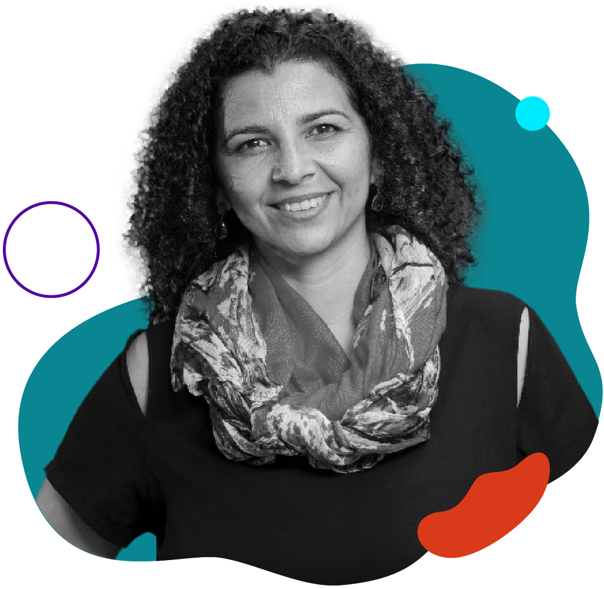
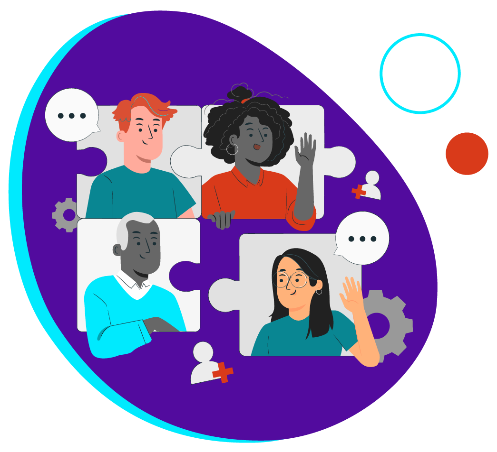
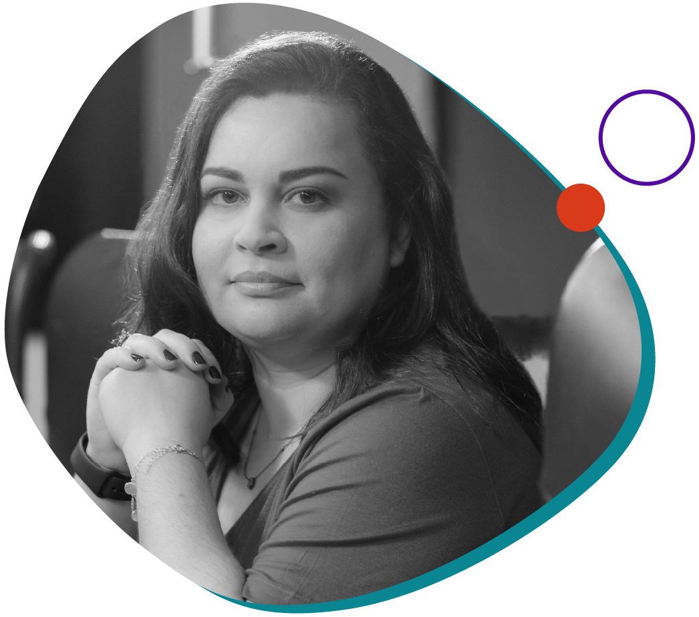
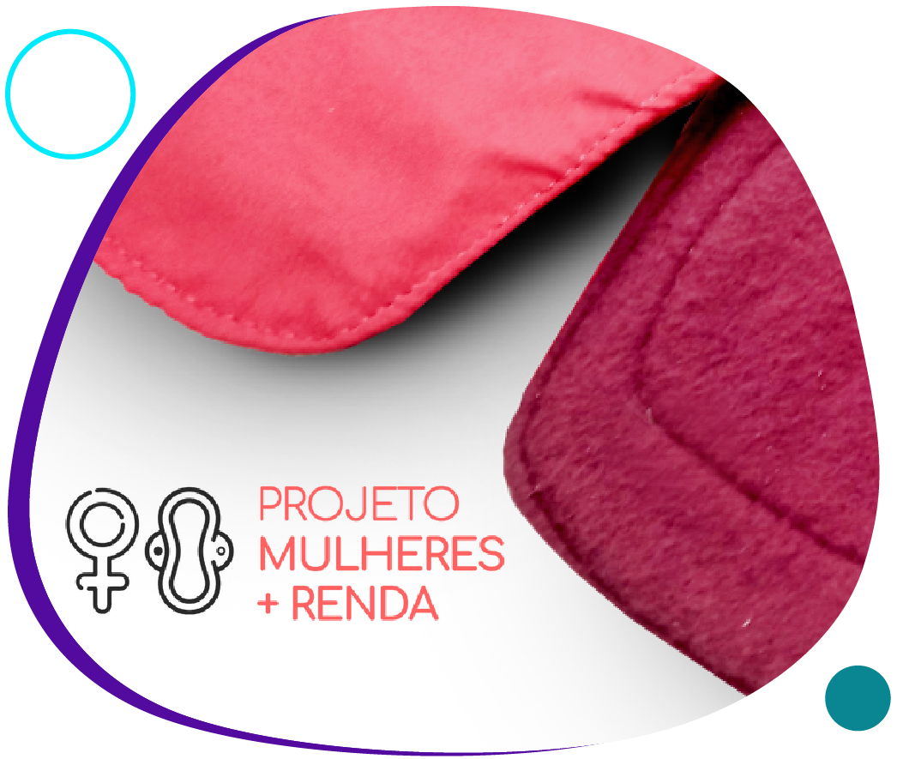
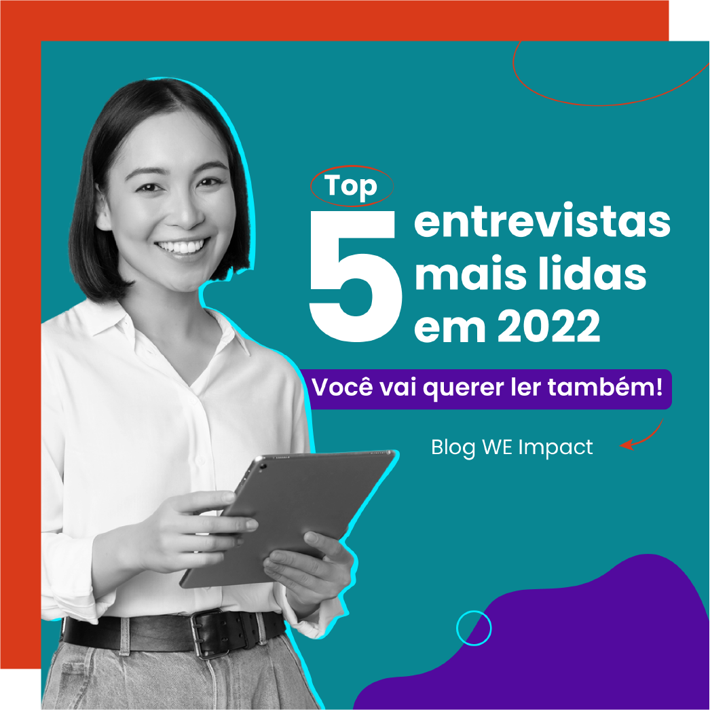

Não queremos ir para o spam! =) selecione este email como
“confiável” ou mova-o para a Caixa de Entrada.
Capital intelectual para transformar
Em um país onde a maior parte da população é composta por
mulheres e pessoas negras, a representatividade e as
oportunidades que elas encontram no ecossistema de startups
ainda são extremamente baixas.
Como forma de contribuir para a transformação desse cenário,
nossa CEO, Lícia Souza, e as #mentorasWE
Impact Thammy I
Marcato, Transformation Architect da KPMG & Distrito
Leap e
Cynthia Zanoni, Technology Strategist da Microsoft,
abriram
mentorias gratuitas exclusivas para impulsionar a jornada de
empreendedoras negras (cis ou trans) e o crescimento de seus
negócios.
O movimento foi parte de uma ação especial de Dia Global
do
Empreendedorismo Feminino + Dia da Consciência Negra
que
anunciamos em novembro do ano passado.
Nos encontros, as fundadoras mentoradas apontaram os
principais desafios de suas jornadas e tiveram acesso a todo
o conhecimento de nossas especialistas em desenvolvimento de
negócios, gestão empresarial, captação de investimentos,
transformação digital, inovação aberta, novos negócios e
tecnologia.
Está aproveitando a leitura?
Que tal compartilhar essa edição da WE Impact News com
outras empreendedoras e empreendedores da sua rede de
contatos? 😉
#WIN – WE Impact Network
Aplicando as soft skills no sucesso da sua startup

Maíra Pimentel, cofundadora e Diretora de Projetos da
Tamboro
Depois de anos ignorando as soft skills, as
lideranças vêm
percebendo que montar um time diverso em talentos e
habilidades socioemocionais pode ser uma grande
vantagem
competitiva.
Com isso, elas estão se tornando um atrativo para o mercado
– atualmente, 87% das recrutadoras e recrutadores
acreditam
que elas são cruciais ao avaliar candidaturas.
Dessa necessidade, surgem soluções como a Tamboro, fundada
por Maíra Pimentel, uma startup que desenvolve essas
habilidades por meio de inteligência de dados.
No blog da WE Impact, ela compartilha dicas de como prover
esses valores na sua startup:
#DiversidadenaPrática
Tendências de D&I para 2023

O número de empresas com recursos e gestão dedicados à
diversidade e inclusão está crescendo! A pesquisa
Benchmarking: Panorama das Estratégias de Diversidade no
Brasil 2022 e tendências para 2023, apontou avanço
de X e
mapeou, ainda, as principais ações de 117 empresas de 34
setores diferentes com grande potencial para
2023:
“Minha principal dica é não desistir, por mais
difícil que o
caminho pareça. A jornada empreendedora vai ser uma
montanha-russa com muitos altos e baixos.
Os momentos de altos são extremamente gratificantes, porque
cada empreendedora e empreendedor é protagonista da
diferença que está fazendo no mundo.
Então, continue, mesmo que os momentos pareçam impossíveis:
essa é uma jornada que demanda muita
resiliência.”
- Fabiane
Kuhn, fundadora e CEO
da Raks Tecnologia Agrícola
#ElasImpactam

Criando seu site com a #MentoraWEImpact
E por falar em mentoria gratuita... nossa mentora Cynthia
Zanoni vai ministrar, no dia 27 de janeiro, um workshop
sobre Power Pages.
Nesse evento gratuito, você vai aprender a criar um site com
a ferramenta e, com esse conhecimento, desenvolver uma
página institucional para sua empresa, divulgar produtos e
serviços, criar um portfólio pessoal… sem utilizar códigos
longos e complexos!
Acesse o link para saber mais:

Impacto positivo ao cubo
Já pensou em contribuir para independência financeira
feminina enquanto ajuda a combater um problema que afeta
cerca de 11,3 milhões de habitantes no Brasil?
É o que faz o Programa Mulheres+Renda, da Rede Asta. Ao
lutar contra a pobreza menstrual, o projeto promove impacto
positivo em três vertentes: gera renda para
costureiras
impactadas pela crise econômica; apoia a preservação do
meio
ambiente; e disponibiliza kits de absorventes
reutilizáveis
para pessoas que menstruam e não podem pagar por eles.
#NasRedes

Perdeu esse conteúdo?
Em dezembro, publicamos uma retrospectiva com as
entrevistas
mais lidas do blog da WE Impact. Confira o post para
ver a
lista de artigos baseados na jornada e experiência de
mulheres que, além de inspirar a representatividade e o
empoderamento feminino, compartilham dicas práticas
de como
alcançar o sucesso no ecossistema de tecnologia e inovação!